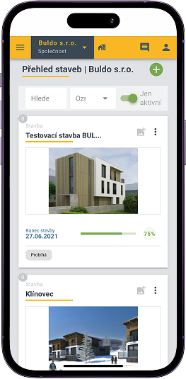
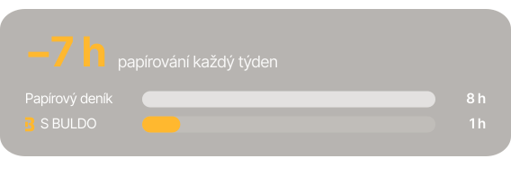

Celá stavba
v jedné aplikaci
Celá stavba v telefonu. Deník, vícepráce, fotky i lidé na jednom místě.
Firmy, které důvěřují aplikaci BULDO:
Celá stavba v telefonu. Deník, vícepráce, fotky i lidé na jednom místě.
Firmy, které důvěřují aplikaci BULDO:







Online · 5 aktivních staveb


Pro řemeslníky a malé firmy, které chtějí deník v telefonu.
za uživatele / měsíc
Pro firmy, které řídí lidi, stroje a harmonogram.
za uživatele / měsíc
Pro stavební firmy, které řeší vícepráce a dokumentaci.
za uživatele / měsíc
Všechny funkce Profi jako paušál pro 40-100 uživatelů.
celkem / měsíc
Ceny jsou uvedeny bez DPH.
| Funkce | Basic | Standard | Profi | Profi+ |
|---|---|---|---|---|
| Online stavební deníkDenní zápisy, podpisy a export. | ||||
| PočasíAutomaticky zapsané ke každému dni. | ||||
| Nastavení práv uživatelůKdo smí co vidět a upravovat. | ||||
| TimelineHarmonogram a postup prací. | ||||
| ZaměstnanciDocházka a kdo je na které stavbě. | ||||
| StrojeEvidence techniky a nářadí. | ||||
| Pracovní skupinyTýmy a party na stavbách. | ||||
| DokumentyVýkresy, smlouvy a protokoly. | ||||
| VícepráceEvidence, ocenění a schválení. | ||||
| StatistikyPřehledy napříč stavbami. | ||||
| PodporaOdpověď do 1 pracovního dne. | ||||
| Cena při roční platbě | 99 Kč | 199 Kč | 245 Kč | 9 999 Kč |
| Cena při měsíční platbě | 149 Kč | 249 Kč | 299 Kč | 11 999 Kč |
Ceny jsou uvedeny za uživatele za měsíc, Profi+ celkem za měsíc pro 40-100 uživatelů. Programování na míru 1000 Kč / hod.

Jak poznat, že je pozemek skutečně vhodný pro stavbu? Vyplatí se dřevostavba? Jaký zdroj vytápění zvolit?

Jak poznat, že je pozemek skutečně vhodný pro stavbu? Vyplatí se dřevostavba? Jaký zdroj vytápění zvolit?

Jak poznat, že je pozemek skutečně vhodný pro stavbu? Vyplatí se dřevostavba? Jaký zdroj vytápění zvolit?
Založení účtu zabere pár minut. Po zkušební době si
vyberete tarif, nebo účet jednoduše necháte být.

Na počítači, notebooku, tabletu i chytrém telefonu. BULDO je webová aplikace, takže nic nestahujete ani neinstalujete. Přihlášení je chráněné dvoufázovým ověřením.
Ne. U tarifů Basic, Standard a Profi platíte za aktivního uživatele, ne za stavbu. Počet staveb je ve všech tarifech neomezený. Profi+ má jednu cenu za celý účet pro 40 až 100 uživatelů.
Ano. Celý deník nebo jen jeho část vyexportujete do PDF a můžete ho vytisknout. Pod každým podepsaným zápisem je uvedeno, kdo ho podepsal: jméno, funkce a společnost. Postup najdete v Poradně v části Export a tisk stavebního deníku.
Deník můžete vyexportovat do PDF, případně vytisknout a uložit v papírové podobě. Stavbu lze také přepnout do režimu Archivovat: data zůstanou v cloudu a stavbu můžete později znovu aktivovat. Tlačítko Archivovat stavbu je na profilu stavby vlevo dole pod mapou.
Ano. Každému uživateli stavby nastavíte konkrétní práva, takže vidí a upravuje jen to, co potřebuje. Postup je v Poradně v části Uživatelé stavby.
Nenašli jste, co jste hledali?
Přejít do poradny